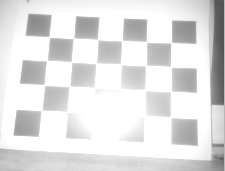
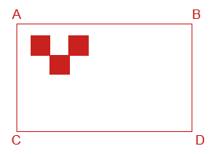
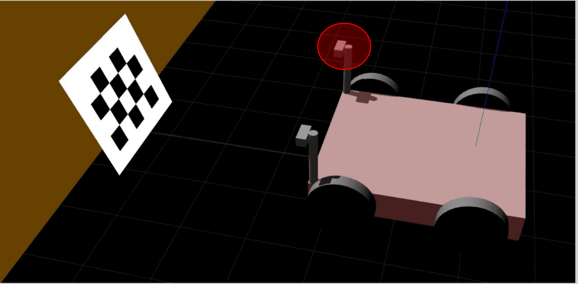
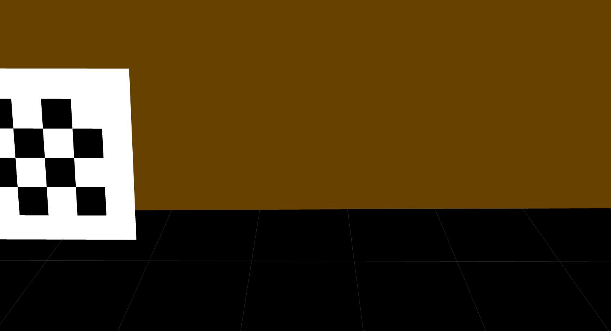
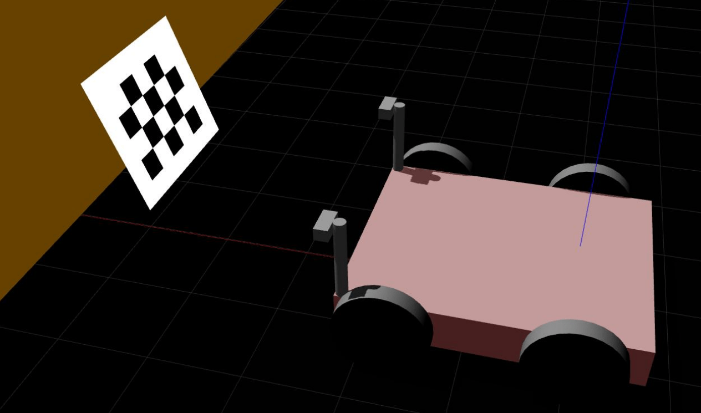
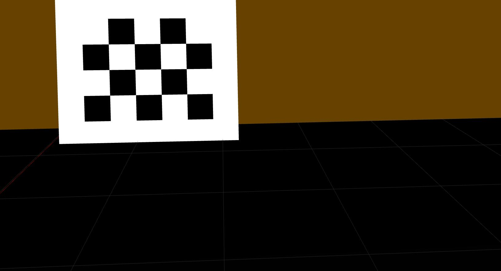

Checkerboard Static Camera - Calibration Routine
In this calibration routine, the camera and checkerboard can not be moved/disturbed during the calibration process. Before proceeding to perform the calibration process we assume that the user
has already connected the camera head to the VPU.
changed the PORT state from “CONF” to “RUN”.
is able to receive the 3D Data because this routine uses only the amplitude image/reflectivity image for the calibration.
is not running the ifmVisionAssistant in parallel.
knows the exact position of a robot coordinate system.
Procedure
Clone the o3r-utilities repository.
$ git clone https://github.com/ifm/o3r-utilities.git
Create a virtual environment and install the required packages (run from the extrinsic_calibration/checkerboard_static_camera_calibration folder).
$ python -m venv venv # create a virtual environment $ source venv/bin/activate # activate the virtual environment $ pip install -r requirements.txt # install the required python packages
Activate the new python venv, register it with ipykernal (used to work with virtual environments and Jupyter notebooks) and start Jupyter lab:
$ source venv/bin/activate # Activate the virtual environment $ pip install ipykernel # Install ipykernel to work with venv and Jupyter notebooks $ python -m ipykernel install --user --name=venv # Register the venv $ jupyter-lab # Start jupyter-lab

Note: you can remove a venv from the list of ipykernels with
jupyter kernelspec remove venv
Start the calibration process: After setting up the scene and measuring all the distances (see section below): edit the following parameters in the second cell of the Jupyter Notebook.
Note: The values below are examples values: please input the values as measured for your setup.
if True: # camera and target are mounted horizontally # A is upper left corner in the image and also in the world X_AB=1.200 Z_AB=0.565 X_CD=1.200-0.200 Z_CD=0 Y_AC=0.415 Y_BD=-0.385
If the camera is mounted vertically, make sure to change the value from true to false in Line 5, the second cell of the Jupyter Notebook: see the example below
# XYZ coordinates [m] of the ABCD points if True: # camera and target are mounted horizontally # A is upper left corner in the image and also in the world X_AB=1.200 Z_AB=0.565 ...
Edit all the measurements
Select your prefered data input source:
source = "ifm3dpy://%s/port%d" % (ip, camPort) #source = "adlive://%s/port%d" % (ip, camPort) # it's also possible to use a recording as source: #source=r"adrec://C:\Projects\iCV-Algo\O3R\workspace\20210920_095332_calib2.h5"
Use either reflectivity or amplitude image for calibration: depending on which has a less noticeably bright spot (resulting from the active illumination of the O3R camera).
# by default, the amplitude image is used to detect the corner points. As an alternative, you might try to use # the reflectivity image instead. #image_selection = "reflectivity" image_selection = "amplitude" ...
Run the second cell and check the results. If the calibration is successful then the plots will be displayed as shown in below example figure.
<!--  -->
If the Calibration succeeded then run the fourth cell to write calibration values to the O3R system, i.e. your device. Please don’t skip this step: after any further steps, the old estimation results are not recoverable.
Setting up the scene
Requirements
A Checkerboard of size 800 X 600 mm² is printed either directly thick aluminum sheet or printed on matte finish paper and pasted to the board. The calibration board can not move during one camera’s complete calibration, due to the design of the process. Please find the checkerboard in pdf format
here,Cardboard edges should not extend past the checkerboard dimensions as this will result in a calibration error.
Scene
Rest the checkerboard on a wall and make sure the checkerboard occupies the maximum field of view of the camera for the most accurate calibration.
Move the Robot such that the Y-Axis of a Robot Coordinate System is exactly parallel to the checkerboard.
Tilt the board if a reflection of the illumination is seen on the camera image. You can tilt as long as the top edge is fully resting on the wall. Keep in mind that all the edges of the board still have to be visible to the camera after tilting the checkerboard.
Good Positioning |
Bad Positioning |
|---|---|
|
 |

Required Measurements
Camera Mounting |
Checkerboard Positioning |
Measurements |
|---|---|---|
Horizontal |
 |
X_AB |
Vertical |
|
X_AC |

{kind=link}
{kind=link}
{kind=link}
Robot Coordinate System (RCS) is assumed to be a right-handed coordinate system and rests on the ground plane.
All measurements are in meters from the Robot coordinate system to the edges of the checkerboard in a cartesian coordinate system. Rotation angle results are given in radiant.
Measurements for the camera having an offset along the y-axis respective to the RCS:
(When the cameras are mounted on the sides of AGV)
In this case, placing the checkerboard exactly in front of the AGV may not capture the whole checkerboard which is not desired and leads to calibration failure.
Therefore place a robot in such a way that the whole checkerboard is captured and also the Y-Axis of the RCS is exactly parallel to the checkerboard. The measurements along Y-Axis won’t be equal and it is totally fine.
Y_AC != Y_BD != 0.4m
The sample scene setup for a camera mounted on the right side of an AGV gives a better understanding of the above statement.
Robot Positioning |
Image Captured |
|---|---|
|  |  |
|  |  |
{kind=link}
{kind=link}
{kind=link}
{kind=link}
Measurements for the above scene
Geometric Configuration |
Description for Y_AC & Y_BD |
|---|---|

|
Y_AC and Y_BD are both positive in this case because the checkerboard is moved to the right side to capture the whole checkerboard in the amplitude/reflectivity image. |